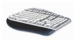
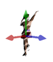
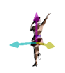
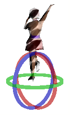
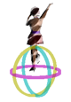
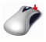
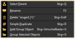
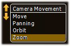
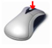
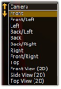

| Generally: | |
| + | left mouse button actions for objects, |
|  | right mouse button actions for camera |
|
Left Mouse Button: Moving and Rotating of Objects |
| World axis Ctrl + W | Object Axis Ctrl + O | Objects can be moved or rotated along the world-or their own axis. Hold the left mouse button down to change between Move and Rotate and vice versa. | ||
| - Select the object | ||||
| - Move or rotate it along the selected axis |
|  |  | Left mouse button down to move object along world or object axis | |
|  |  | Left mouse button down to rotate object around world or object axis |
|  | Right Mouse Button: Context Menu + Camera Actions |
|  | Short right mouse click Menu for selecting, renaming deleting duplicating or grouping selected object |
|  | Right mouse button down Select action with scroll wheel or 'Shift + Ctrl’ |
|  | Middle Mouse Button: Select Camera or Zoom |
|  | Mouse wheel click after that Set camera for this view via the mouse wheel turn or keyboard space or 1…9..0 button |
| Mouse wheel turn Zoom in or out |